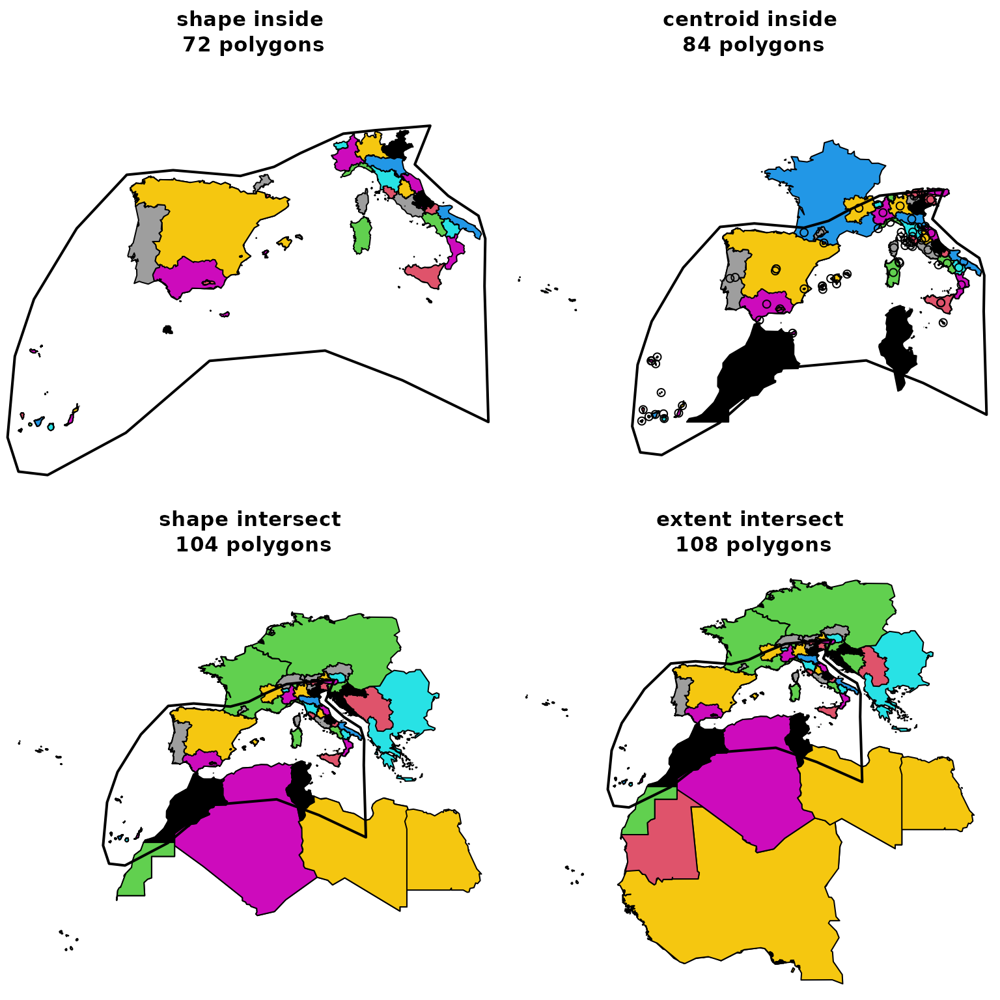

GIFT tutorial, advanced users
Pierre Denelle & Patrick Weigelt
2022-10-25
Source:vignettes/GIFT_Internal_functions.Rmd
GIFT_Internal_functions.RmdThis vignette documents some functions and specificities that were not presented in the main vignette of the package. It is mainly targeted for advanced users of the GIFT database.
1. Versions and metadata for checklists
In all the functions from the package, there is a version argument. This argument allows for retrieving different isntances of the GIFT database and therefore make all previous studies using the GIFT database reproducible. For example, the version used in the Weigelt et al. (2021) is "1.0". To get more information about the content of the different versions, you can go here and click on the tab Version Log.
To access all the available versions of the database, you can run the following function:
versions <- GIFT_version()
kable(versions, "html") %>%
kable_styling(full_width = FALSE)| ID | version | description |
|---|---|---|
| 1 | 1.0 | Data included in and workflows used to assemble GIFT 1.0 are described in detail in: Weigelt, P., König, C. & Kreft, H. (2020) GIFT – A Global Inventory of Floras and Traits for macroecology and biogeography. Journal of Biogeography, 47, 16-43. doi: 10.1111/jbi.13623 |
| 2 | 2.0 | New checklist and trait data included for Europe, the Mediterranean, temperate Asia, Panama, Japan, Java, New Zealand, Easter Island and the Torres Strait Islands. Updated workflows to document biases in the distribution of trait data; Updated taxonomic trait derivation; Final trait values and agreement scores for trait values from several resources are now calculated separately including and excluding restricted resources. |
| 3 | 2.1 | New checklists and traits included for the Americas, Crimea, Madagascar, Arabian peninsula, Laos, Bhutan, India, China, Sunda-Sahul shelf, Tonga, Canary Islands, West Africa and for ferns and palms globally. Large categorical trait data included from Try. |
| 4 | 2.2 | New checklists (with a focus on endemic species) and traits for various oceanic archipelagos (Cook Islands, Madeira, Arctic Islands, Cayman Islands, Comores, Juan Fernandez, Palau, Galapagos, Frisian Islands, Antilles, Japan, Mayotte, Fiji, Taiwan, etc.) and various mainland regions (Equatorial Guinea and the entire former USSR in sub-regions). |
The column version of this table is the one to use when you want to retrieve past versions of the GIFT database. By default, the argument used is GIFT_version = "latest" which leads to the current latest stable version of the database (“2.0” in October 2022).
The function GIFT_lists() can be run to retrieve metadata about the GIFT checklists. In the next chunk, we call it with different values for the GIFT_version argument.
list_latest <- GIFT_lists(GIFT_version = "latest") # default value
list_1 <- GIFT_lists(GIFT_version = "1.0")The number of checklists available was 3122 in the version 1.0 and equals 4475 in the version 2.0.
2. References
When using GIFT database in a research article, it is a good practice to cite the references used, and list them in an Appendix. The following function retrieves the reference for each checklist, as well as some metadata.
ref <- GIFT_references()References are documented in the column ref_long.
3. Checklist data
The main wrapper function to retrieve checklists and their species composition is GIFT_checklist() but you also have the possibility to retrieve individual checklists using GIFT_checklist_raw(). You would need to know the identification number list_ID of the checklists you want to retrieve.
To quickly see all the list_ID available in the database, you can run:
gift_lists <- GIFT_lists()
length(unique(gift_lists$list_ID))## [1] 4475
When calling GIFT_checklist_raw(), you can set the argument namesmatched to TRUE in order to get extra columns informing about the taxonomic harmonization that was performed when uploading the list to GIFT database.
listID_1 <- GIFT_checklist_raw(list_ID = c(11926))## ================================================================================
listID_1_tax <- GIFT_checklist_raw(list_ID = c(11926), namesmatched = TRUE)## ================================================================================## [1] 16## [1] 33## [1] 1106## [1] 1331In the list we called, you can see that we “lost” some species after taxonomic harmonization as we went from rlength(unique(listID_1_tax\(orig_ID))` in the source to `r `length(unique(listID_1_tax\)work_ID))` after the taxonomic harmonization. This means that several species were considered as synonyms or unknown plant species in the taxonomic backbone used for harmonization.
Note: the service mainly used to taxonomically harmonize the species’ names was The Plant List up to version 2.0 and World checklist of Vascular Plants afterwards.
4. Spatial subset
In the main vignette, we illustrated how to retrieve checklists that were falling into a provided shapefile, using the western Mediterranean basin provided with the GIFT R package.
data(med)We here provide more details on the different values the overlap argument can take, using the function GIFT_spatial(). The following figure illustrates how this argument works:
Figure 1. GIFT spatial
We now illustrate this by retrieving checklists falling in the western Mediterranean basin using the four options available.
med_centroid_inside <- GIFT_spatial(shp = med, overlap = "centroid_inside")
med_extent_intersect <- GIFT_spatial(shp = med, overlap = "extent_intersect")
med_shape_intersect <- GIFT_spatial(shp = med, overlap = "shape_intersect")
med_shape_inside <- GIFT_spatial(shp = med, overlap = "shape_inside")
length(unique(med_extent_intersect$entity_ID))## [1] 108## [1] 104## [1] 84## [1] 72We here see that we progressively lose lists as we apply more selective criterion on the spatial overlap. The most restrictive option being overlap = "shape_inside" and the less restrictive one being overlap = "extent_intersect".
Using the functions GIFT_shape() and calling it for the entity_IDs retrieved in each instance, we can also map this difference.
par(mfrow = c(2, 2), mai = c(0, 0, 0.5, 0))
geodata_shape_inside <- GIFT_shape(med_shape_inside$entity_ID)## ================================================================================
plot(sf::st_geometry(geodata_shape_inside),
col = geodata_shape_inside$entity_ID,
main = paste("shape inside\n",
length(unique(med_shape_inside$entity_ID)),
"polygons"))
plot(sf::st_geometry(med), lwd = 2, add = TRUE)
geodata_centroid_inside <- GIFT_shape(med_centroid_inside$entity_ID)## ================================================================================
plot(sf::st_geometry(geodata_centroid_inside),
col = geodata_centroid_inside$entity_ID,
main = paste("centroid inside\n",
length(unique(med_centroid_inside$entity_ID)),
"polygons"))
points(geodata_centroid_inside$point_x, geodata_centroid_inside$point_y)
plot(sf::st_geometry(med), lwd = 2, add = TRUE)
geodata_shape_intersect <- GIFT_shape(med_shape_intersect$entity_ID)## ================================================================================
plot(sf::st_geometry(geodata_shape_intersect),
col = geodata_shape_intersect$entity_ID,
main = paste("shape intersect\n",
length(unique(med_shape_intersect$entity_ID)),
"polygons"))
plot(sf::st_geometry(med), lwd = 2, add = TRUE)
geodata_extent_intersect <- GIFT_shape(med_extent_intersect$entity_ID)## ================================================================================
plot(sf::st_geometry(geodata_extent_intersect),
col = geodata_extent_intersect$entity_ID,
main = paste("extent intersect\n",
length(unique(med_extent_intersect$entity_ID)),
"polygons"))
plot(sf::st_geometry(med), lwd = 2, add = TRUE)
6. Remove overlapping regions
GIFT comprises many polygons and for some regions, there are several polygons overlapping. How to remove overlapping polygons and the associated parameters are two things detailed in the main vignette. We here provide further details:
length(med_shape_inside$entity_ID)## [1] 72
length(GIFT_no_overlap(med_shape_inside$entity_ID, area_th_island = 0,
area_th_mainland = 100, overlap_th = 0.1))## [1] 53
# The following polygons are overlapping:
GIFT_no_overlap(med_shape_inside$entity_ID, area_th_island = 0,
area_th_mainland = 100, overlap_th = 0.1)## [1] 145 146 147 148 149 150 151 414 415 416 417 547
## [13] 548 549 550 551 552 586 591 592 736 738 739 10001
## [25] 10072 10104 10184 10303 10422 10430 10978 11029 11030 11031 11033 11035
## [37] 11038 11039 11042 11044 11045 11046 11434 11474 11477 11503 12231 12232
## [49] 12233 12632 12633 12634 12635
# Example of the function: Spain mainland and Andalusia
GIFT_no_overlap(c(10071, 12078), area_th_island = 0, area_th_mainland = 100,
overlap_th = 0.1)## [1] 12078
GIFT_no_overlap(c(10071, 12078), area_th_island = 0, area_th_mainland = 100000,
overlap_th = 0.1)## [1] 100717. Species
species <- GIFT_species()
str(species)## 'data.frame': 364573 obs. of 5 variables:
## $ work_ID : num 1 2 3 4 5 6 7 8 9 10 ...
## $ genus_ID : num 950 951 952 952 952 952 952 952 952 952 ...
## $ work_genus : chr "Aaronsohnia" "Abacopteris" "Abarema" "Abarema" ...
## $ work_species: chr "Aaronsohnia pubescens" "Abacopteris lineata" "Abarema abbottii" "Abarema alexandri" ...
## $ work_author : chr NA NA NA NA ...
species$Family <- GIFT_taxgroup(
as.numeric(species$work_ID), taxon_lvl = "family", return_ID = FALSE,
species = species)
group <- GIFT_taxgroup(as.numeric(species$work_ID[1:5]), taxon_lvl = "order",
return_ID = FALSE)
group <- GIFT_taxgroup(as.numeric(species$work_ID[1:5]),
taxon_lvl = "higher_lvl", return_ID = FALSE,
species = species)8. Looking-up a species
Fagus <- GIFT_species_lookup(genus = "Fagus", epithet = "sylvatica",
namesmatched = TRUE)
str(Fagus)## 'data.frame': 31 obs. of 24 variables:
## $ orig_ID : num 59384 10231 1393055 1395198 1395199 ...
## $ orig_genus : chr "Fagus" "Fagus" "Fagus" "Fagus" ...
## $ name_ID : num 29235 29236 29236 29236 29236 ...
## $ cf_genus : num 0 0 0 0 0 0 0 0 0 0 ...
## $ genus : chr "Fagus" "Fagus" "Fagus" "Fagus" ...
## $ cf_species : num 0 0 0 0 0 0 0 0 0 0 ...
## $ aff_species : num 0 0 0 0 0 0 0 0 0 0 ...
## $ species_epithet : chr "silvatica" "sylvatica" "sylvatica" "sylvatica" ...
## $ subtaxon : chr NA NA NA NA ...
## $ author : chr "L." NA NA NA ...
## $ matched : num 1 1 1 1 1 1 1 1 1 1 ...
## $ epithetscore : num 0.889 1 1 1 1 ...
## $ overallscore : num 0.944 0.833 0.833 0.833 0.833 ...
## $ resolved : num 1 1 1 1 1 1 1 1 1 1 ...
## $ synonym : num NA NA NA NA NA NA NA NA NA NA ...
## $ matched_subtaxon : num NA NA NA NA NA NA NA NA NA NA ...
## $ accepted : num NA NA NA NA NA NA NA NA NA NA ...
## $ service : chr "tpl" "tpl" "tpl" "tpl" ...
## $ work_ID : num 18283 18283 18283 18283 18283 ...
## $ taxon_ID : num 3288 3288 3288 3288 3288 ...
## $ work_genus : chr "Fagus" "Fagus" "Fagus" "Fagus" ...
## $ work_species_epithet: chr "sylvatica" "sylvatica" "sylvatica" "sylvatica" ...
## $ work_species : chr "Fagus sylvatica" "Fagus sylvatica" "Fagus sylvatica" "Fagus sylvatica" ...
## $ work_author : logi NA NA NA NA NA NA ...9. Overlap_GloNAF tables (and others)
So far, only two resources available.
glonaf <- GIFT_overlap(resource = "glonaf")
gmba <- GIFT_overlap(resource = "gmba")
str(glonaf)## 'data.frame': 15494 obs. of 4 variables:
## $ entity_ID: num 10535 10535 10535 10535 10535 ...
## $ glonaf_ID: num 2 9 43 86 112 120 173 187 189 208 ...
## $ overlap12: num 2.34e-05 6.28e-06 1.33e-05 9.96e-01 1.12e-05 ...
## $ overlap21: num 0.000341 0.000163 0.003174 0.992337 0.000203 ...10. Taxonomy
taxo <- GIFT_taxonomy()
head(taxo)## taxon_ID taxon_name taxon_author taxon_lvl lft rgt
## 1 1 Embryophyta <NA> level_1 1 39914
## 2 2 Tracheophyta <NA> level_2 2 35965
## 3 3 non-Tracheophyta <NA> level_2 35966 39911
## 4 4 Pteridophyta <NA> level_3 3 1480
## 5 5 Spermatophyta <NA> level_3 1481 35964
## 6 6 Angiospermae <NA> level_4 1482 35749
str(taxo)## 'data.frame': 19956 obs. of 6 variables:
## $ taxon_ID : num 1 2 3 4 5 6 7 8 9 10 ...
## $ taxon_name : chr "Embryophyta" "Tracheophyta" "non-Tracheophyta" "Pteridophyta" ...
## $ taxon_author: chr NA NA NA NA ...
## $ taxon_lvl : chr "level_1" "level_2" "level_2" "level_3" ...
## $ lft : num 1 2 35966 3 1481 ...
## $ rgt : num 39914 35965 39911 1480 35964 ...